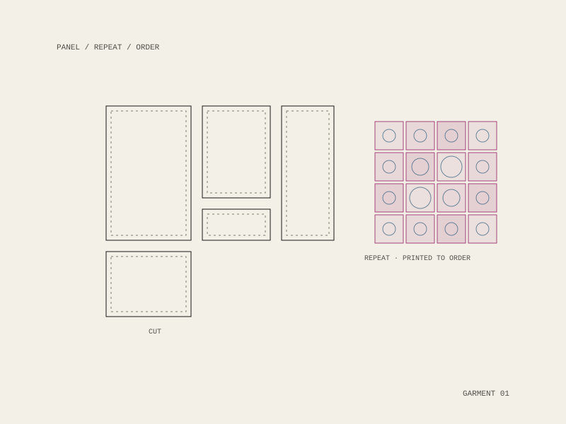
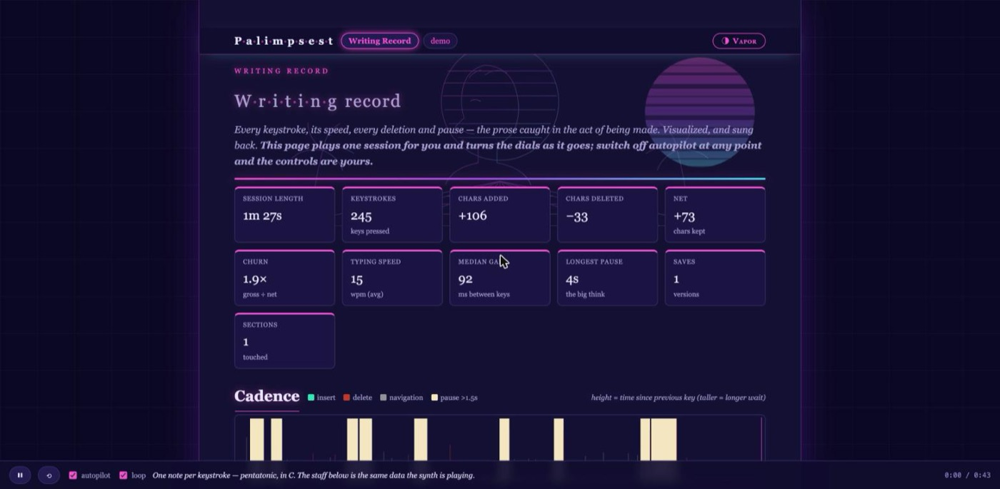
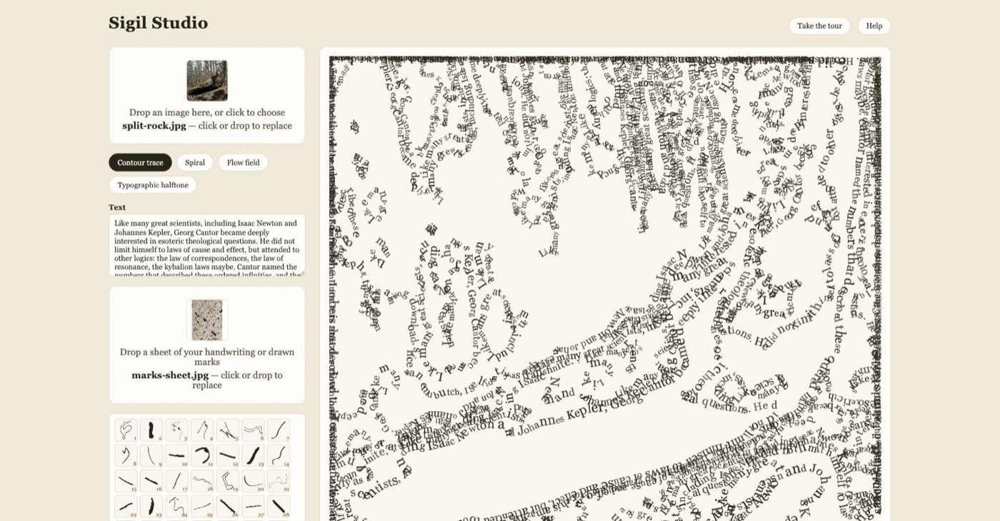
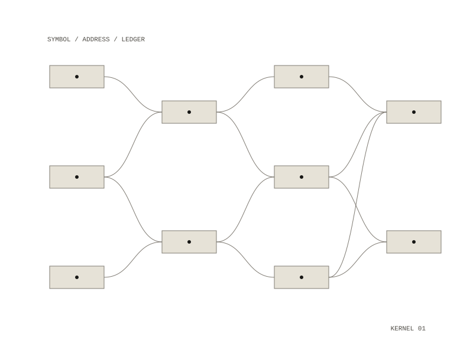
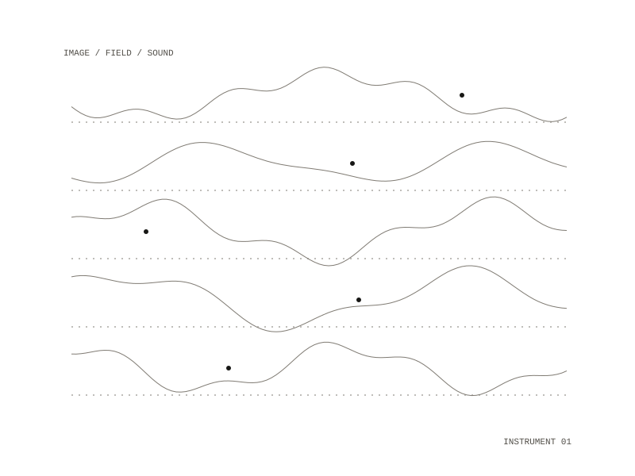
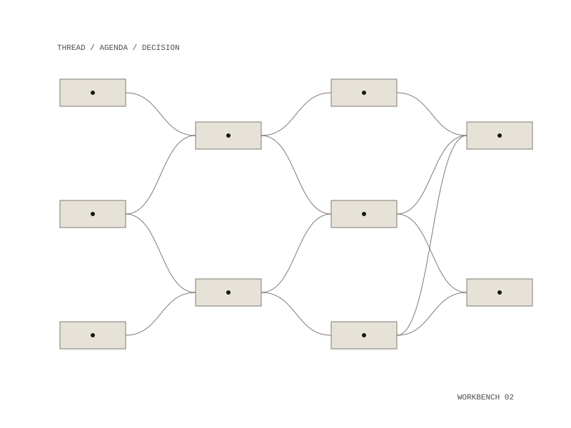
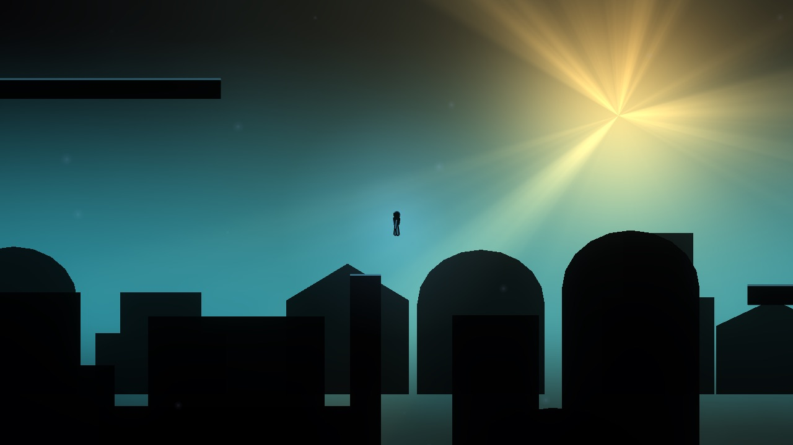

Ritual technologies for more livable futures.
Art, infrastructures and herbal practice at the intersections of memory, networks, value, care and the more-than-human.
Selected Work

Order of the Meridian
A festival apparatus that performs one machine operation slowly enough that you can name what it destroyed.

Sanctuary Cell Division
A local language model grounded in your own archive, on hardware you control. Nothing leaves the machine.

Evertunes
The conquest of the American west told in 99 generative video-and-music stories, released chapter by chapter.

What the Tech
Verifying origin and intent in an era shaped by forgery and deepfakes.

Heddatron
Five robots played Ibsen's men in an absurdist Hedda Gabler — robotics built by Botmatrix.

Peat and Repeat
A nonprofit edition house producing artists' prints, photographs, books and environmental projects.

PGM Diagrams
Reading a spell as a procedure: what it takes in, what it emits, and what it does not account for.

Prayer Coin
A coin struck for prayer — the one transaction that was never supposed to have a denomination.

Unpaid Labor Coin
A currency for care, maintenance and attention — the work that holds everything up and is never entered in a ledger.

Emu Butch
A book-length work in prose.

Mugworts Free Herbal Clinic
A free herbal clinic — medicine as something a community makes and keeps, not something it buys.

Kokowa
A browser tool that made building a virtual world as easy as making a page.

PAOM
Custom apparel made to order with zero inventory waste — and a platform that pays the artists whose work it prints.

13Bit Productions
A New York film production company making features, shorts and underground work.

Diagrammatic Immanence
A source text formalized as a monoidal category, rendered as a string diagram, and emitted as a live-coding patch.

Palimpsest
Point it at a book and it builds an editorial dossier in your browser. Deterministic; nothing leaves your machine.

Sigil Studio
Four engines that redraw an uploaded image entirely out of letterforms. Runs client-side; no backend.

Divinatory OS
A versioned correspondence graph as kernel, divinatory methods as programs, an append-only ledger as memory.

sounds-like
A picture, a film, a camera or a drone goes in; music comes out — and you can perform with it.

newmusic
Most recommenders return more of what your ear already recognises. This one runs the model backwards.

Meridian
Self-hosted, multi-format, AI-native vault for notes, PDFs, ebooks, audio and video.

Research Manager
Decide what to research next, run the thread lifecycle, and promote a thread into a project.

Cyborg Support
The case it exists for: a project that is 70% built and has not been touched in 14 months.

Dream
You are dreaming. You win when you realise it.
About
Eon Meridian is an artist, writer, technologist and herbalist working across computation, medicinal plants, ritual, sound, diagrams and resilient infrastructure. This site is an evolving record of works, collaborations, institutions and experiments. Its sibling — Caerjar — is the vessel much of this work is built inside.